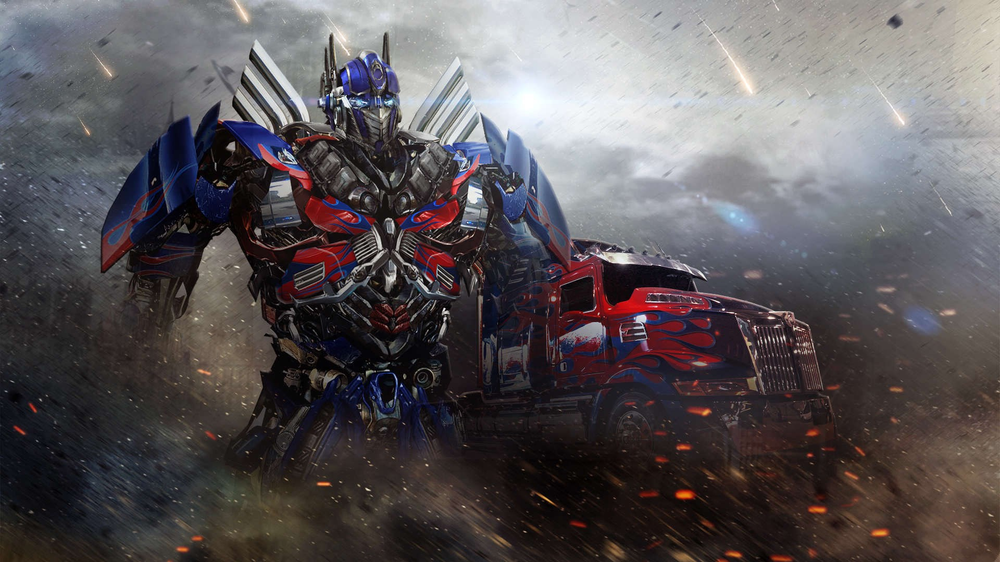
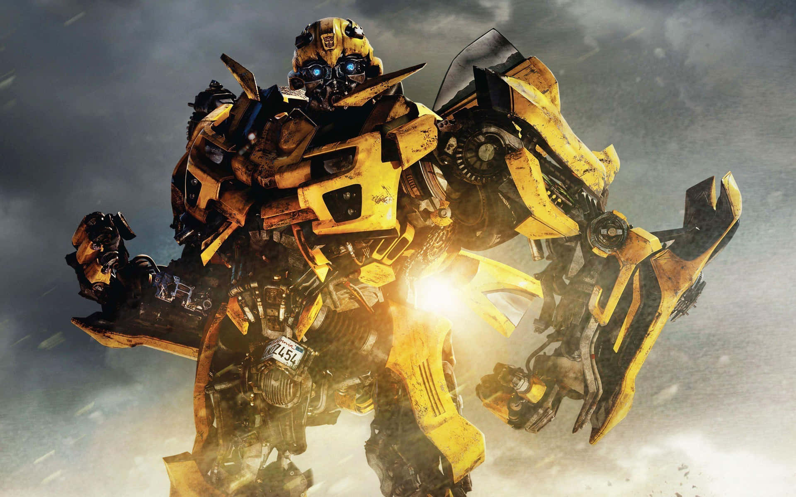
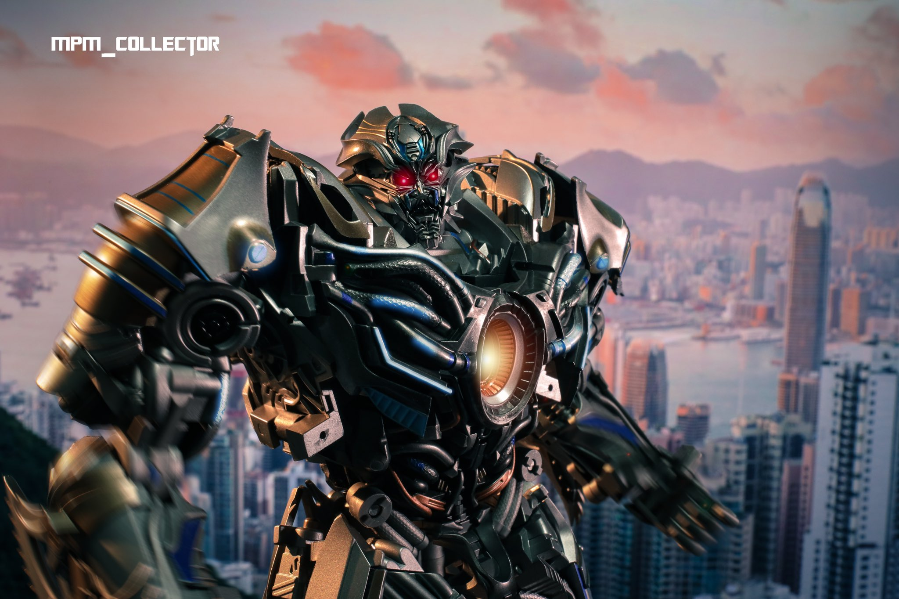
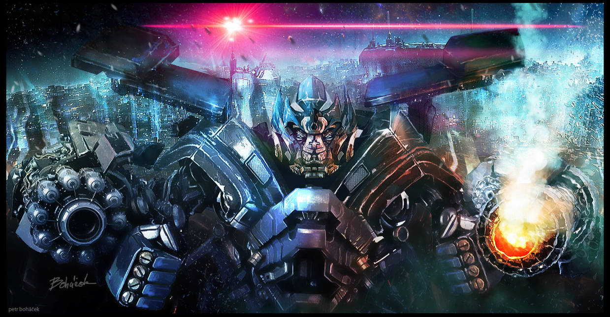
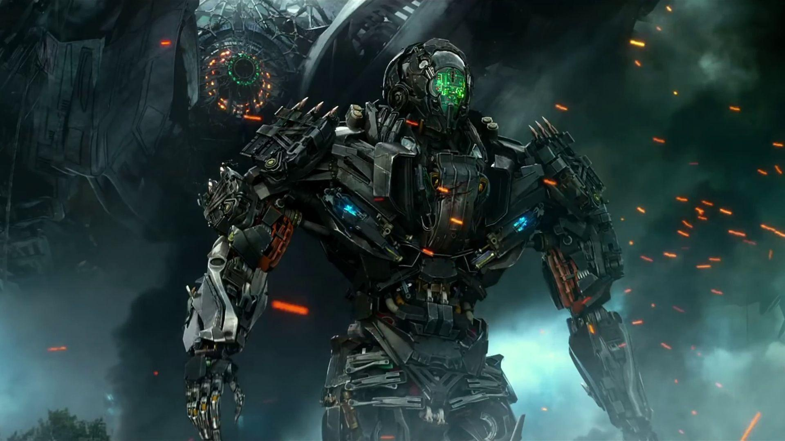
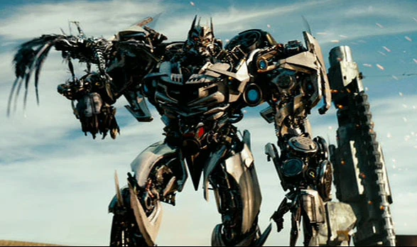
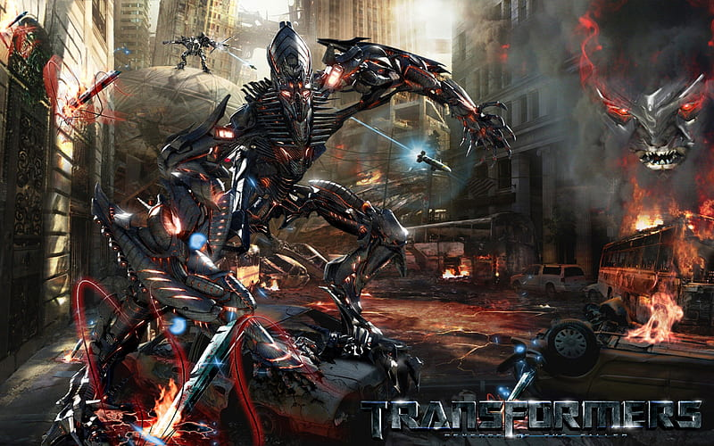

ტრანსფორმერების ფილმმა უამმრავი მოწონებისა და შექების გარდა სხვა ძალიან გავლენიანი კომპანიების ინტერესიც დაიმსახურა, კინოკიმპანია სენჩერი ფოქსმა და უნივერსალ ფიქჩერსმა სცენარის ყიდვა სცადა თუმცა, პარამოუნტ ფიქჩერსმა ამ თაობაზე უარი განაცხადა, რაც შეეხება შეფასება იმ დროისთვის ერთ-ერთი საუკეთესო შეფასება ჰქონდა და კვლავ ინარჩუნებს ფილმების სამყაროში ლიდერულ ადგილს, ტელეეკრანიზაციის ისტორია 2007 წელს დაიწყო მაშინ მაყურებელმა პირველად იხილა უცხო რასის მოაზროვნე ტრანსფორმელ რობოტებისა და ადამიანების ურთიერთობა ბრძოლები რომელიც არამარტო ჩვენს პლანეტის არამედ სამყაროს არსებობას საფრთხეს უქმნიდა, სცენარი იწყება ტრანსფორემელების მოგზაურობით დედამიწაზე და მთავრდება მათი წასვლით, თუმცა ეს დასასრული არარის, ისინი, კვლავ დაბრუნდებიან...
3 ოსკარის გამარჟვებული
5 ჯერ საუკეთსოდ აღიარებული
პარამოუნტ ფიქჩერის ნომერ 1
მატურებლისა და კრიტიკოსების არჩევანი
ერთ-ერთი უმაღლესი შეფასების მქონე
ულამაზესი ტელეექკანიზაციით
ტრანსფორმერების 1 ნაწილი
ტრანსფორმელების პირველი ნაწილის ისტორია 2007 წელს დაიწყო, კონოინდუსტრიის ერთ-ერთმა გავლენიანმა კომპანიამ "პარამოუნტ ფიქჩერსმა" გადაყვიტა ახალი როლი ეთამაშა ფანტასტიკურ მილმების ჟანნრში, მათ თანამშრომლობა დაიწყეს იმ დროისთვის ერთ-ერთ საინტერესო რეჟიროსთან "მაიკლ ბეი" სთან, რომელმაც საძირკველი ჩაუყარა ზემოთ ხსენებულ ლეგენდარულ ფილმს ტრანსფორმელებს. პირველ ნაწილში ტრანსფორმელების ერთ-ერთი დაჯგუფება "ავტობოტები" მათი მეთაური "ოპტიმუსის" ბრძანებით მათთვის უცნობ პლანეტაზე დედამიწაზე ჩამოდის და ცდილობს იპოვოს მათი რასისთვის დაკარგული უძვირფასესი ნივთი სახელად კუბი, რომელსაც შეუძლია ნებისმიერი უსულო საგნის ერთ მოაზროვნე რობოტად გარდაქმნა, ისინი იპოვნიან ერთ-ერთ სტუდენტს სემ უიტუიკს რომლის ბაბუაც არქეოლოგი იყო და რაღაც კავშრი ჰქონდა "დესეპტოკონების" ჯგუფის ლიდერი "მეგატრონის" დედამიწაზე აღმოჩენის, შემდეგ აღმოჩნდება რომ დედამიწაზე ტრანსფორმელების განსხვავებული ჯჯუფი "დესეპტიკონები" ჩამოვიდა, პარარელულად კი ავტობოტებისა და დესეპტოკონების ბრძოლის გარდა, ისინი უძვირფასესი განძის კუბის პოვნას ცდილობენ და მისი ბოროტად გამოყენება უნდათ, ამ ბრძოლაში კი ჩართულია რამდენიმე უდანაშაულო ადამიანი და ამერიკის შეერთებული შტატების თვდაცვის ძალები. ფილმის გადაღება 150 მილიონი დაჯდა, ხოლო შემოსავალმა 700 მილიონს გადააჭარბა.
უყურე სრულ ფილმს ქართულად საიტზე: ge.movie
ფილმის თრეილერი
ტრანსფორმელების 2 ნაწილი
ტრანსფორმელები მეორე ნაწილი 2009 წელს გამოვიდა, ტრანსფორმელების დაჯგუფება "ავტობოტები" მიეჩვიენ მეგობრულ პლანეტაზე ცხოვრებას ფილმის მთავარ გმირთან სემ უიტუიკთან ერთად და სხვა ადამიანებთან ერთად, საბოლოოდ კი დარჩენ გადაწყვიტეს, თუმცა მათი ბედნიერება დიდანს არ გაგრძელებულა, რადგან "დესეპტიკონების" ლიდერი "მეგატორნი" კვლავ გამოჩნდა და დაიწყო დიდი პრობლემები შეიქმნა. ავტობოტების ჯგუფს და კაცობრიობას სანერვიულო გაუჩნდა."მეგატრონმა" პრიმიტიული ხანის ტრანსფორმერული ენერგიის წყაროს "ენერგონის მატრიცას" დედამიწაზე პირამიდებში დამალულ ადგილს მიაგნო, მთავარი გმირები კი ცდილობენ შეეწინააღმდეგონ და რადაც არ უნდა დაუჯდეთ შეაჩერონ ბოროტი განზრახვებისგან რაც დედამიწის და კაცობრიობის დამონებას გულისხმობს, მნიშნველოვანი ორთაბრძოლების გარდა მაყურებელმა დიდი თვითგანწირვა და ურთიერთმეგობრობა ნახა ეკრანზე, რაც შეეხება ბიუჯეთს 180 მილიონი დოლარი დაჯდა ფილმის გადაღება შემოსავალმა კი 900 მილიონს გადააჭარბა .
უყურე სრულ ფილმს ქართულად საიტზე: ge.movie
ფილმის თრეილერი
ტრანსფორმელების 3 ნაწილი
ტრანსფორმელების მესამე ნაწილი 2011 წელს გამოვიდა, ფილმის დასაწყისი მოგვითხრობს მთავარი გმირის სემის ცხოვრებაზე, სადაც მან 2 ჯერ დედამიწა გადაარჩინა და ის დაუფასებლად გრძნბს თავს, ტრანსფორმელების რასის მთავარი გვარის "პრაიმების" ერთ-ერთი ლიდერი "სენტინელი" მთვარეზე მიტოვებულ ხომალდში აღმოჩნდება, ავტობოტების ჯუფთან შეთანხმებით ისინი მოქმედებ სვეტების აღმოჩენაზე, სადაც "სენტინელი" გაწირავს თავის კანონიერ შთამომავალს "ოპტიმუსს" და მის წინააღმდეგ დესეპტიკონების ჯგუფს შეუერთდება დედამიწაზე რაც შეიძლება ბევრი ტრანსფორმელის ჩამოყვანის განზრახვით. ისინი ჩიკაგოს დამონებას შეძლებენ და ნელ ნელა აყალიბებენ ძლიერ და ფაშისრურ არმიას რათა ჯერ დედამიწა და შემდეგ მთელი მსოფლიო დაიპყრონ, ერთ მომენტში ავტობოტების ჯგუფი გაითამაშებს კიდეც რაკეტით დედამიწის დატოვებას თუმცა მათი სიძლიერის ნამდვილი იარაღი გვიან გამოჩნდება, მოხდება დიდი დაპირისპირება ნახევრად დანგრეულ შტატში ადამიანების რაზმისა და ავტობოტების ერთიანობით, რათა გაათავისუფლონ დედამიწა ბოროტი რობოტებისაგან, ფილმის ბიუჯეტი 200 მილიონი და შემოსავალმა 1 მილიარდ 200 მილიონს გადააჭარბა.
უყურე სრულ ფილმს ქართულად საიტზე: ge.movie
ფილმის თრეილერი
ტრანსფორმელების 4 ნაწილი
ტრანსფორმელების მეოთხე ნაწილი 2014 წელს გამოვიდა, შეცვლილი მთავარი მსახიობების გარდა ფილმმა მაინც გააგრძელა დიდების დინასტია და კვლა ერთ ერთო საუკეთესო შეფასება მიიღო. ავტობოტებმა და დესეპტიკონებმა დატოვეს დედამიწა. ბიზნესმენების და გენიალური მეცნიერების ჯგუფი ცდილობს დახვეწოს ტექნოლოგიები ისე, რომ უცხოპლანეტელების შემოტევის განმეორების შემთხვევაში კაცობრიობას ჰქონდეს საპასუხო იარაღი. ამასობაში დედამიწას უმიზნებს სხვა ძველი და ძლიერი ტრანსფორმერების რასა. ფილმის გადაღება 210 მილიონი დაჯდა, შემოსავალმა კი 1 მილიარდს გადააჭარბა.
უყურე სრულ ფილმს ქართულად საიტზე: ge.movie
ფილმის თრეილერი
ტრანსფორმელების 5 ნაწილი
ტრანსფორმელების მეხუთე ნაწილი 2017 წელს გამოვიდა, ჰონკონგის ბრძოლის შემდეგ ოპტიმუს პრაინს ახალი საფრთხე ელის, რომელსაც მარტო ვერ გაუმკალვდება. ამიტომ მას უწევს ახალი მოკავშირეების ძებნა, რათა გადაარჩინოს დედამიწა და სამყარო, ფიმლის გადაღება 215 მილიონი დაჯდა, შემოსავალმა კი 600 მილიონს გადააჭარბა.
უყურე სრულ ფილმს ქართულად საიტზე: ge.movie
ფილმის თრეილერი
ტრანსფორმელების 6 ნაწილი
ტრანსფორმელების მეექვსი ნაწილი ცოტა გვიან კერძოდ 2023 წელს გამოვიდა, ფრენჩაიზის ახალი ნაწილი, რომელშიც მოქმედება 2018 წლის ფილმში “ბამბლბი“ ასახული მოვლენებიდან 7 წლის შემდეგ ნიუ-იორკში და პერუში ვითარდება. 1994 წელს, როდესაც ოპტიმუს პრაიმი დედამიწაზე აკლიმატიზაციას წარმატებით გადის, პლანეტაზე დესეპტიკონები ჩამოდიან. არქეოლოგი და ყოფილი ჯარისკაცი ტრანსფორმერების ორ ყოფილ ფრაქციას მაქსიმალებსა და პრედაკონებს შორის ბრძოლის კვალს აღმოჩაენს, რომლებიც მათი შენიღბული ფორმით, პრეისტორიული მხეცების ფორმას იღებენ და დროსა და სივრცეში მოგზაურობენ. ახლა ისინი ჩვენთან არიან დედამიწაზე. შედეგად, ოპტიმუს პრაიმს ახალ მტრებთან ტერორკონებთან და მათ მრისხანე ლიდერთან სკორჯისთან დაპირისპირება, ხოლო ავტობოტებს და მაქსიმალებს კაცობრიობის გადანრჩენა მოუწევთ. ფილმის გადაღება 200 მილიონი დაჯდა და შემოსავალმა 400 მილიონს გადააჭარბა.
უყურე სრულ ფილმს ქართულად საიტზე: ge.movie
ფილმის თრეილერი
ოპტიმუს პრაიმი
მაყურებლისა და კრიტიკოსების აზრით ტრანსფორმელების ფილმის საუკეთესო მხატვრულად შექმნილი პერსონაჟი, მთავარი ტრანსორმელი, ოპტიმუს პრაიმი. ოპტიმუსის პესრონაჟმა უდიდესი წვილი შეიტანა მთელს ტრანსფორმერულ ფილმებში ის არის ადამიანების დიდი მეგობარი და ტრანფორმერების მთავარი დაჯგუფების ლიდერი. დედამიწაზე ჩამკსვლისდღიდან ბევრი შრომა და წინააღმდეგობა გაუწია ადამიანური რაის მტრებსა და ცუდისმსურველებს, მოიპოვა ადამიანების დიდი ნდობაც.

ბამბოლ ბი
ყველაზე ერთგულ და საყვარეტ ტრანსფორმელად წოდებული ბამბოლ ბი, ის საწყისი ეტაპიდანვე ადამიანების კერძოდ, სემ უიტუიკის ერთგული მანქანა და ტრანსფორმელია, მისი წვლილი ფილმში უდაოა, ასევე გვაქვს ფილმი რომელიც მთლიანად მას ეხება, ბრძოლებში მისი თავის გამოჩენა არ ჰკმარა მან ისედაც დიდი სიყვარული გამოიწვია მაყურებელში, უხმოდ დარჩენილი ტრანსფორმელი კვლავაც ხმის ფონოგრამას ეძებს და იმედია იპოვის კიდეც, ასევე იმედია ბამბოლ ბი უკანასნკელი ფილმი არაა მხოლოდ მასზე გადაბული.

უყურე სრულ ფილმს ქართულად საიტზე: ge.movie
ფილმის თრეილერი
მაიკლ ბეი
ლეგენდად წოდებული, შრომისმოყვარე და ძალიან თავდაჯერებული, მაიკლ ბეი, როგორც სტატის დასაწყისში ვახსენეთ, ისაა ტრანსფორმელების ფილმის საძირკვლის ჩამყრელი, ყველაფერი კი მისი ბავშვობიდან დაიწყო, მაიკლი ჯერ კიდევ 9 წლის იყო როდესაც წიგნის წერა დაიწყო სახელად "ადამიანები და კარგი უცხოპლანეტელები" სწორედ ამ წიგნიდან გაჩნდა ტრანსფორმელების მთავარი პერსონაჟერი: ოპტიმუს პრაიმი, ბამბოლ ბი, მეგატრონი და ასე შემდეგ, მას არაერთი შემოქმედება აქვს შექმნილი, ის ასევე თანამშრომლობს ყველაზე გავლენიან კომპანიასთან, უნივერსალ ფიქჩერთან. ტრანსფორმელების მხოლოდ 5 ნაწილი მის სახელზეა, ვიმედოვნოთ რომ შემდეგი ნაწილებს ისვე მისი მონაწილეობით ვიხილავთ.
შია ლაბოფი
ერთ-ერთი ცნობილი და წამყვანი მსახიობი მთელს ჰოლივუდში შია ლაბოფი. მან მაყურებელს თავი ჯერ კიდევ 17 წლის ასაკში, გააცნო ,როცა ითამაშა ბენის როლი ფილმ დისტურბიაში. ტრანსფორმელებში მისი პერსონაჟი სემ უიტუიკია, ცნობისმოყვარე სტუდენტი და ერთგული მეგობარი, ასევე ავტობოტების მთავარი საზრუნავი. ცუდია რომ მან მხოლოდ პირველ სამ ნაწილში მიიღ მონაწილეობა, თუმცა ფილმის პოპულარობაშ მასაც დიდი წვილილი მიუწევს.
მეგან ფოქსი
ყველასათვის ცნობილი, მოდელი მსახიობი და მომღერალი მეგან ფოქსი. დედამიწის ყველა დროის ლამაზმან ქალებში არაერთხელ მოხვედილა, ის სილამაზის ერთ ერთ წყაროდ ჯერ კიდევ ფილმ ჯესიკას სხეულიდან იქცა. მეგანის ტრანსფორმელური სამყარო 2007 წელს დაიწყო, მისი პერსონაჟი სემის შეყვარებული გოგონა იყო, რომელიც საკმაოდ კარგად იყო ჩართული ფილმის სცენარში.მან მხოლოდ პირველ ორ ნაწილში მიიღო მონაწილეობა.
მარკ ვოლბერგი
მსოფლიოს ერთ-ერთი საუკეთესო მსახიობად წოდებული, გამორჩეული თავისი დიადი როლებისა, ფილმებიდან მსახიობი, მარკ ვოლბერგი. მან მონაწილეობა მიიღო ტრანსფორმელების მეოთხე და მეხუთე ნაწილებში, ისიც სხვა მთავარი გრირებისავით, ავტობოტებს ეხმარება მსოფლიოს გადასარჩენად, თუმცა პირადი ცხოვრება კი უკან რჩება. ნელ-ნელა ყველაფერი ლაგდება და გამოსწორების გზაზეა, ბოლოს კი როცა ყველაფერი მორჩება პერსონაჟი ტოვებს ტრანსფორმელებს.
ფილმის ინდუსტრია
ფილმის ნაწილი
გადაღების ქვეყნები
გამოშვების წელი
ბიუჯეტი
შემოსავალი
ტრანსფორმელები 1
აშშ, კანადა
2007
150 მილიონი
713 მილიონი
ტრანსფორმელები 2
აშშ, ეგვიპტე
2009
180 მილიონი
923 მილიონი
ტრანსფორმელები 3
აშშ
2011
200 მილიონი
1 მილიარდ 204 მილიონი
ტრანსფორმელები 4
აშშ, საფრანგეთი
2014
210 მილიონი
1 მილიარდ 4 მილიონი
ტრანსფორმელები 5
აშშ, დუბაი
2017
215 მილიონი
600 მილიონი
მაბმოლ ბის ისტორია
აშშ, ავსტრალია
2018
180 მილიონი
604 მილიონი
ტრანსფრორმელები 6
აშშ, გერმანია
2023
200 მილიონი
506 მილიონი
აირჩიე საყვარელი ტრანსფრორმელები
ავტობოტები
ოპტიმუს პრაიმი
ბამბოლ ბი
აირონჰაიდი
ელაიტ-ვან
რაჩეტი
ჯაზი
ჯეტფაერი
სენტინელ პრაიმი
ვეელჯეკი
ალფა ტრიონი
მეტროპლექსი
ფორსტეს მაქსიმუსი
არჩევა
დესეპტიკონები
მეგატრონი
გალვატრონი
საუნდვეივი
ბონქრაშერი
ფოლენი
დევასტატორი
სტარსსქრიმი
ბლექაუთი
ლოკდაუნი
დირფტი
სენტინელი
შოკვეივი
არჩევა
გამოიცანი და მოიგე
წესები მარტივია, ქვევით სულ ბოლოს, გამქრალია 5 ცალი ტრანსფორმელების მხატვრული პერსონაჟების ფოტო, როცა მაუსს მიახლოებთ კითხვების დაბლა მხარეს, ფოტო, ავტომატურად გამოჩნდება, ხოლო თუ მანამდე სწორად შემოხაზავთ პერსონაჟის სახელს, ყველა სწორად გაცემული კითხვისთვის 20 ლარით დაჯილდოვდებით.
ჩაწერე ტრანსფორმელის სახელი

ჩაწერე ტრანსფორმელის სახელი

ჩაწერე ტრანსფორმელის სახელი

ჩაწერე ტრანსფორმელის სახელი

ჩაწერე ტრანსფორმელის სახელი

ეს საინტერესოა
არსებობა ტრანსფორმელების სამოყვარულო კლუბი ქალაქ თბილისში, მერაბ კოსტავას 34ბ, ვისაც გსურთ გაწევრიანება მობრძანდით, ხოლო თუ ელექტრონულად გნებავთ გაწევრიანება გვაქვს ფეისბუქი დააჭირეთ ღილაკს გაწევრიანება
5 დან რამდენ ქულას დაუწერდით ჩვენს საიტს?
დატოვეთ კომენტარი, რამდენაც მნიშნველოვანი იყოს თქვენთვის, როგორ მოგწეონათ საიტი?